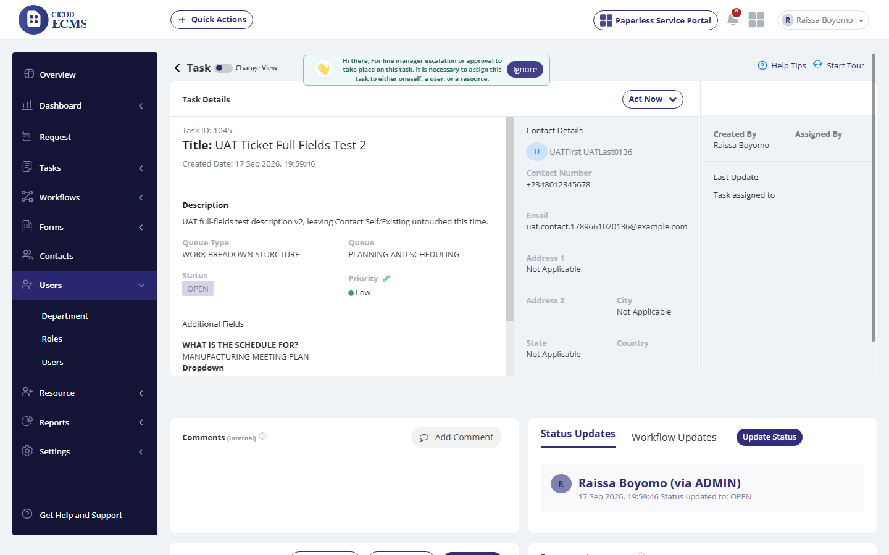
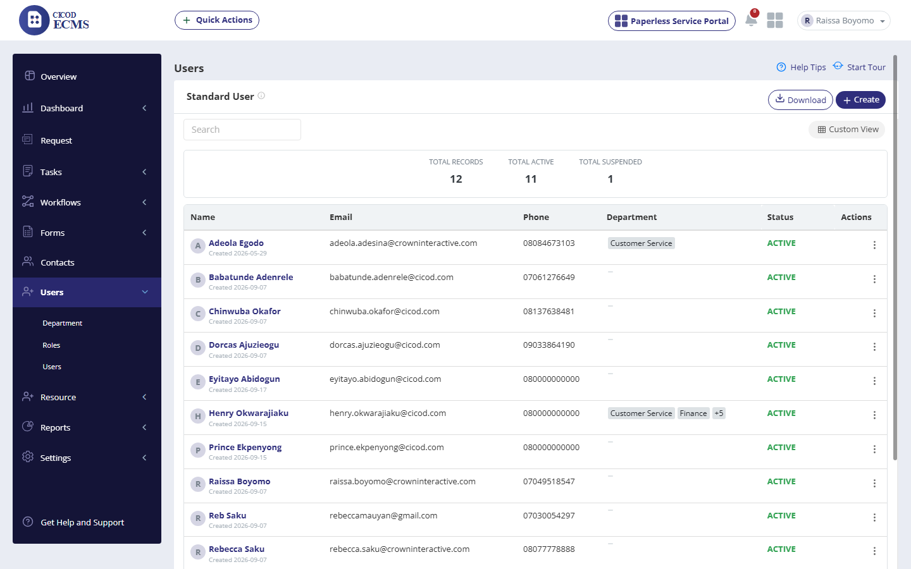
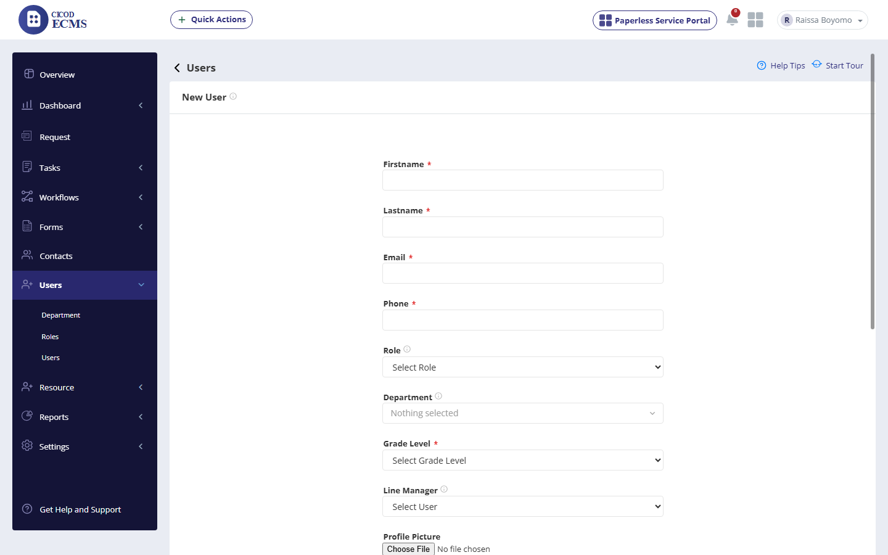
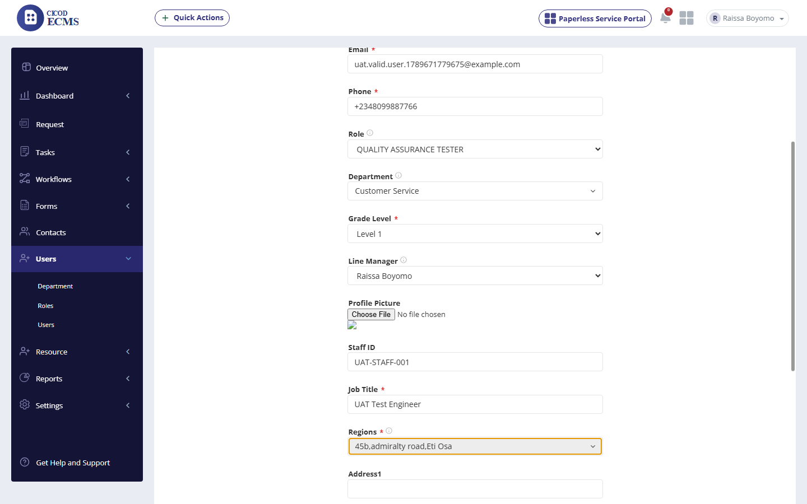
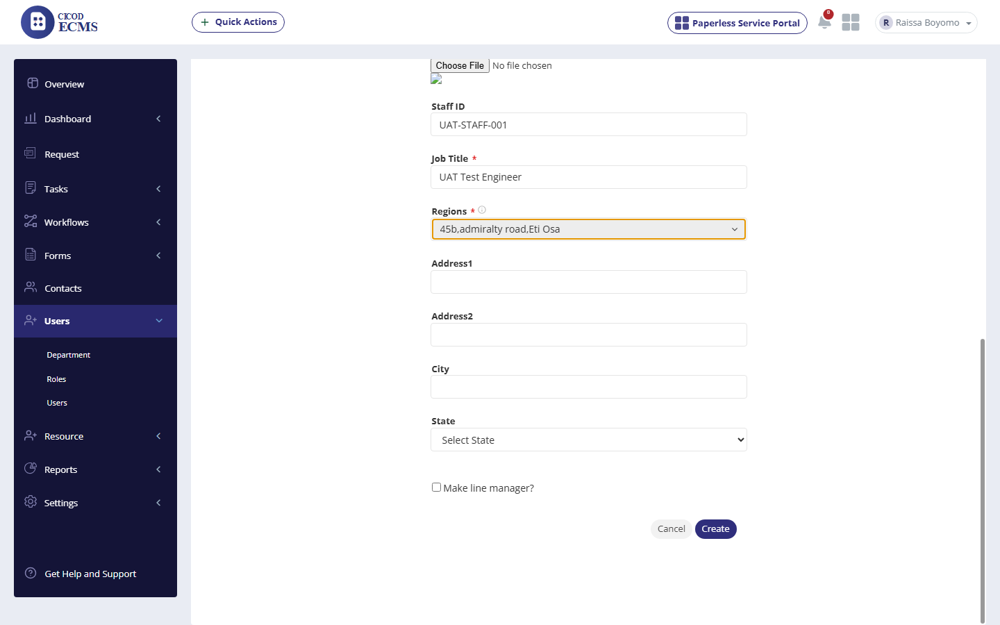
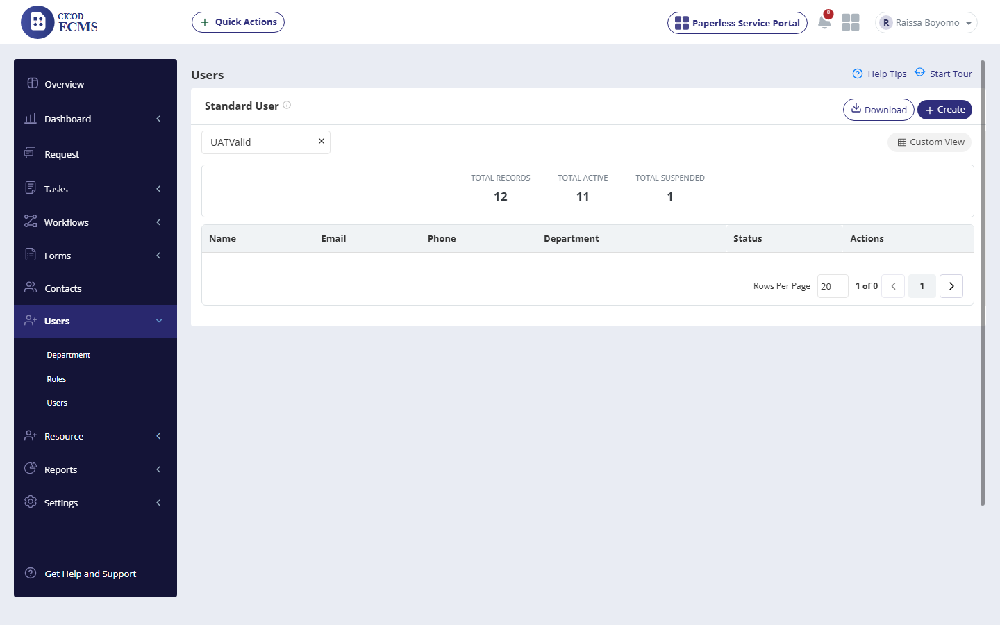
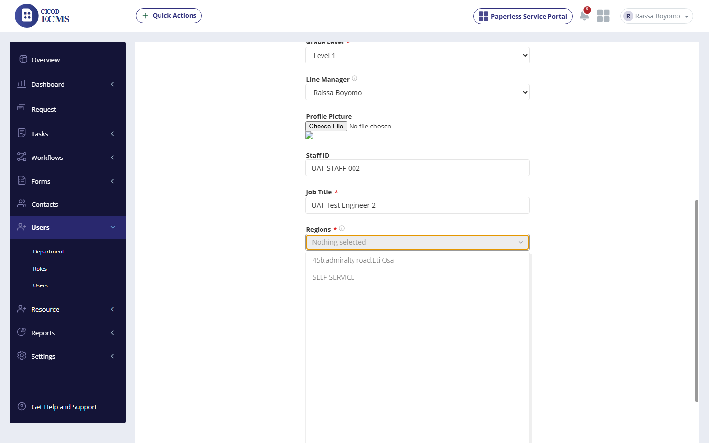
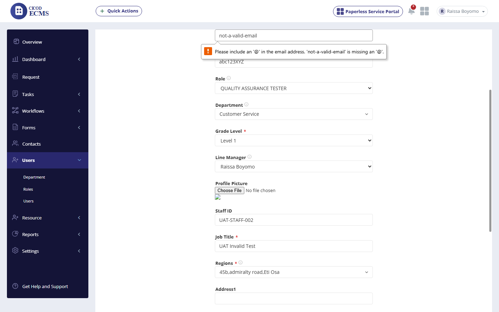
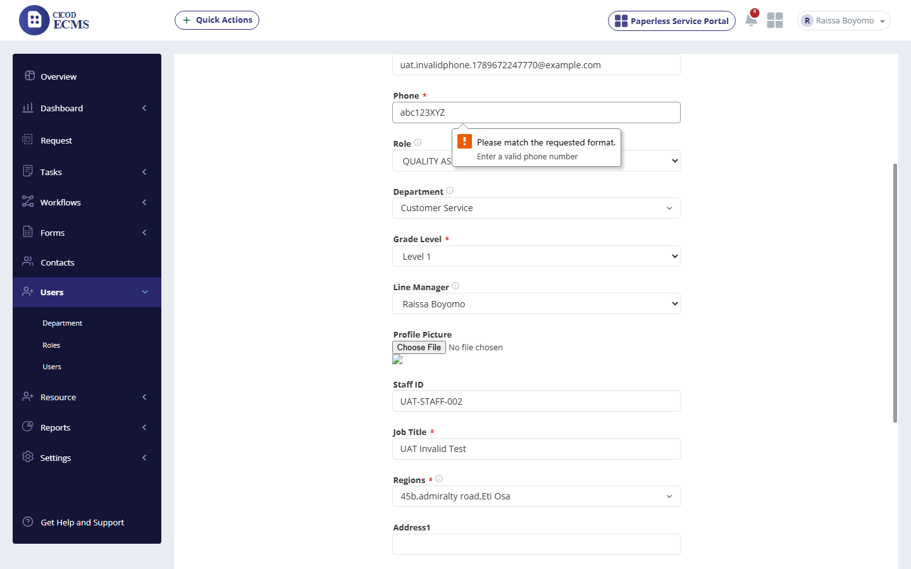

Live functional/UI verification against the Excel Test Script (ECMS TEST SCRIPT RECENT VERSION.xlsx — content physically embedded at the tail of the CONTACTS sheet, reconciled here as its own module) on Target 3 Environment (cicodsaasstaging.com / tenant: cicodecms). This session covered 10 checkpoints across 4 scenarios. Create User was attempted twice with fully valid data and failed silently both times; the duplicate-Staff-ID negative test is blocked as a direct consequence and could not be executed.
| Row | Steps to Reproduce | Expected Result | Actual Result (Live Execution) | Deviations & Defect Notes | Status | Screenshot Evidence |
|---|---|---|---|---|---|---|
| 1 | From the Menu click on User | A sub menu "roles, Department, user" should be displayed |
Confirmed: sidebar "Users" expands to Department / Roles / Users — exact match (different order, same 3 items). |
None. |
PASSED |  |
| 2 | Click on User sub-menu | Display User page |
"Users" list loads: Total Records 12, Total Active 11, Total Suspended 1, with Name/Email/Phone/Department/Status/Actions columns. |
None. |
PASSED |  |
| 3 | Click on Create button | Display new user page |
"New User" form loads with Firstname*, Lastname*, Email*, Phone*, Role, Department, Grade Level*, Line Manager, Profile Picture, Staff ID, Job Title*, Regions*, Address1/2, City, State — matches and exceeds the script's field list. |
None. |
PASSED |  |
| Row | Steps to Reproduce | Expected Result | Actual Result (Live Execution) | Deviations & Defect Notes | Status | Screenshot Evidence |
|---|---|---|---|---|---|---|
| 4 | Enter FirstName / Last Name / Email address / Phone number | Should display First Name / Last Name / Email address / Phone number |
"UATValid" / "UserTest" / a fresh unique email / +2348099887766 all accepted with no validation complaints. |
None. |
PASSED |  |
| 5 | Click and select role / Department / Grade Level / Line Manager; enter Staff ID / Job Title / Regions | Display role / Department / list of grade levels / list of users / Region |
All selected and confirmed via the underlying native <select> elements (not just the display widget): Role=QUALITY ASSURANCE TESTER, Department=Customer Service, Grade Level=Level 1, Line Manager=Raissa Boyomo, Regions="45b,admiralty road,Eti Osa". Staff ID/Job Title free text accepted. |
None — the custom multi-select widgets do correctly sync to their real form fields (verified via DOM), ruling out a widget-sync bug as the cause of Scenario 3. |
PASSED |  |
| Row | Steps to Reproduce | Expected Result | Actual Result (Live Execution) | Deviations & Defect Notes | Status | Screenshot Evidence |
|---|---|---|---|---|---|---|
| 6 | Click on Create button (1st attempt, fully valid data) | Display a successful message, "successfully Created." |
CONFIRMED BUG (P0): the form silently reset to a blank "New User" page. No success message, no error message, no toast. A full page reload of the Users list and a text search for "UATValid" confirmed the user was never created (Total Records remained 12; search returned "1 of 0"). |
[Defect - P0]: Create User does not persist despite fully valid input. |
CONFIRMED BUG (P0) |  |
| 7 | Reproducibility check (2nd attempt, different valid data) | Display a successful message, "successfully Created." |
Repeated with entirely fresh data ("UATValid2"/"UserTest2", Staff ID "UAT-STAFF-002"), additionally confirming the underlying Teams[] and Users[districts][] selects held correct values immediately before submit. Identical result: silent reset, user never created. Confirmed 2/2, ruling out a one-off fluke. |
[Defect confirmed 2/2]: not a transient issue. |
CONFIRMED BUG (P0, 2/2) |  |
| Row | Steps to Reproduce | Expected Result | Actual Result (Live Execution) | Deviations & Defect Notes | Status | Screenshot Evidence |
|---|---|---|---|---|---|---|
| 8 | Enter invalid Email address (missing "@") | Should not accept invalid email address |
Native browser validation correctly blocked submission: "Please include an '@' in the email address. 'not-a-valid-email' is missing an '@'." |
None. |
PASSED |  |
| 9 | Enter invalid Phone number ("abc123XYZ") with a valid email | Should not accept invalid phone number |
Native browser validation correctly blocked submission: "Please match the requested format. Enter a valid phone number." |
None. |
PASSED |  |
| 10 | Enter duplicate Staff ID and click Create | Display an error message, "Staff ID has been entered already." |
Could not be executed — this check requires a Staff ID that already belongs to a successfully-created user, but rows 6-7 confirmed no user can currently be created at all on this tenant. Blocked by the Scenario 3 defect, not skipped by choice. |
[Blocked]: no valid baseline user exists to duplicate against. |
BLOCKED (by defect) | No UI Component (Blocked) |